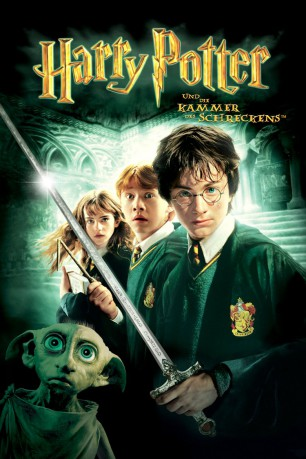

Auszeichnungen: 1 BAFTA-Awards gewonnen
 gesehen am 09.03.2015
gesehen am 09.03.2015Alternativ: Harry Potter and the Chamber of Secrets
Auszeichnungen: 1 BAFTA-Awards gewonnen gesehen am 09.03.2015
 
 IMDB-Wertung: 7.4 / 10
IMDB-Wertung: 7.4 / 10  Metascore:
Metascore: 
Harry Potter könnte sich schönere Sommerferien vorstellen: Einerseits erträgt er nur schwer den herrischen Ton im Haus von Tante Petunia und Onkel Vernon Dursley, denen seine Zauberkunst nicht geheuer ist, andererseits haben ihn seine besten Freunde Ron Weasley und Hermine Granger offenbar vergessen, denn sie beantworten keinen seiner Briefe. Plötzlich taucht der geheimnisvolle Haus-Elf Dobby in Harrys Schlafzimmer auf und warnt ihn: Falls Harry nach Hogwarts zurückkehrt, schwebt er in großer Gefahr. Dobby will den jungen Gryffindor unbedingt davon abhalten, weiter auf die Schule für Hexerei und Zauberei zu gehen – deswegen hat er dafür gesorgt, dass Rons und Hermines Briefe nicht ankommen. Doch was der boshafte Elf auch anstellt – Harry lässt sich nicht beirren.
Jahr: 2002
Dauer: 161 Minuten
FSK: 6
Land: England Studio: Warner Bros.Tonspuren:
Untertitel:
Auflösung: 1080p (1918×800) Größe: 15872 MB
Genre: Abenteuer, Familie, Fantasy, Mystery
Regisseur:  Chris Columbus
Chris Columbus
Drehbuch: J.K. Rowling, Steve Kloves
Soundtrack: John Williams
Darsteller:
 Daniel Radcliffe als Harry Potter
Daniel Radcliffe als Harry Potter Rupert Grint als Ron Weasley
Rupert Grint als Ron Weasley Emma Watson als Hermione Granger
Emma Watson als Hermione Granger Fiona Shaw als Aunt Petunia Dursley
Fiona Shaw als Aunt Petunia Dursley Toby Jones als Dobby the House Elf
Toby Jones als Dobby the House Elf Jim Norton als Mr. Mason
Jim Norton als Mr. Mason Julie Walters als Mrs Weasley
Julie Walters als Mrs Weasley Mark Williams als Arthur Weasley
Mark Williams als Arthur Weasley Tom Felton als Draco Malfoy
Tom Felton als Draco Malfoy Jason Isaacs als Lucius Malfoy
Jason Isaacs als Lucius Malfoy Robbie Coltrane als Rubeus Hagrid
Robbie Coltrane als Rubeus Hagrid Kenneth Branagh als Professor Gilderoy Lockhart
Kenneth Branagh als Professor Gilderoy Lockhart David Bradley als Argus Filch
David Bradley als Argus Filch Alan Rickman als Severus Snape
Alan Rickman als Severus Snape Richard Harris als Professor Albus Dumbledore
Richard Harris als Professor Albus Dumbledore Maggie Smith als Professor Minerva McGonagall
Maggie Smith als Professor Minerva McGonagall Miriam Margolyes als Professor Pomona Sprout
Miriam Margolyes als Professor Pomona Sprout John Cleese als Nearly Headless Nick
John Cleese als Nearly Headless Nick Warwick Davis als Professor Flitwick
Warwick Davis als Professor Flitwick Gemma Jones als Madam Pomfrey
Gemma Jones als Madam Pomfrey Shirley Henderson als Moaning Myrtle
Shirley Henderson als Moaning Myrtle Leslie Phillips als The Sorting Hat
Leslie Phillips als The Sorting Hat Julian Glover als Aragog
Julian Glover als Aragog Adrian Rawlins als James Potter , uncredited
Adrian Rawlins als James Potter , uncreditedDatei: X:\7+mehr(A-Z)\Harry Potter\Harry Potter 2 - und die Kammer des Schreckens (2002, FSK6, 1918x800).mkv seit 15.02.2015
Festplatte: HD Collection-7+mehr(A-Z)+Person
 Es gibt insgesamt 17 Filme in der Gruppe '7+mehr(A-Z)\Harry Potter'
Es gibt insgesamt 17 Filme in der Gruppe '7+mehr(A-Z)\Harry Potter'